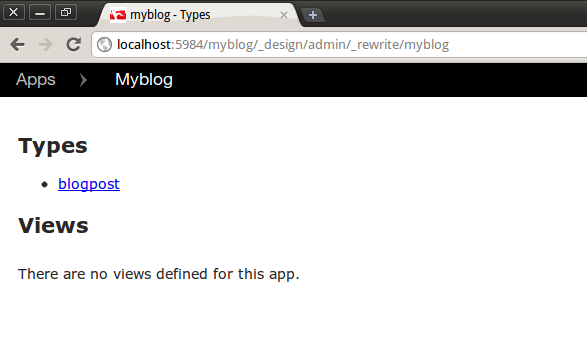
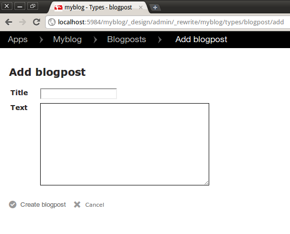

Getting started
Installation
Install the most recent stable version of node, then clone kanso from GitHub. Fetch the relevant submodules by doing the following in the cloned directory:
git submodule init git submodule update
You are then ready to install:
make && sudo make install
Using NPM
If you already have node.js installed, and you're using npm (Node Package Manager), then you can install by simply doing the following:
npm install kanso
Starting a project
For this tutorial we'll be making a fairly typical blog, with posts, comments and users. Some familiarity with CouchDB is expected, but I'll try to explain the concepts as we go.
To create a new project skeleton, enter the following command:
kanso create myblog
This creates a number of files and directories representing a basic project structure. We'll look more closely at the generated files later, but for a brief overview, the directories fall into the following categories:
myblog
|- lib CommonJS modules which define your app
|- static Static files such as jQuery and CSS
|- templates HTML templates used by the app
|- kanso.json Project configuration
This structure is a merely a guide and you are free to place files wherever it makes sense, provided you update the configuration settings in kanso.json.
Deployment
It might seem early in the tutorial to start talking about deployment, but since your app needs to be hosted by CouchDB to run, we're going to cover it now.
The first thing to mention is that Kanso apps are just CouchApps. This means they can be hosted directly from your CouchDB instance, without any additional tier or services.
For the rest of this tutorial we're going to assume you have CouchDB running on http://localhost:5984 (the default settings). If you haven't got a local copy of CouchDB running, go do that now.
Pushing
The push command uploads your app to a CouchDB database. You can find help
on any of the commands used in this tutorial by typing kanso help.
Let's push the new project to your CouchDB instance, and check that everthing works. To do this, enter the following command from your project directory:
kanso push http://localhost:5984/myblog

This creates a new database called 'myblog' and uploads your app to it. If you now visit http://localhost:5984/myblog/_design/myblog/_rewrite/, you should see the following welcome page:

This is the location to use when testing your app. Don't worry about the ugly URL, we can fix this later using virtual hosts.
Describing the data
Now we've got our new project up and running, let's think about the data structures this project requires. Because CouchDB is schemaless, we can make lots of changes as we go without having to worry about doing ALTER TABLE.
The only problem is, it can quickly get complicated when manually validating documents and checking permissions. Thankfully, kanso provides a powerful document validation and permissions tool in the form of Type definitions.
Creating types
In the skeleton project we created earlier, there's a file called
lib/types.js. This is the conventional place to export types.
Remember, the files in the lib directory are
CommonJS modules.
This means anything added to the exports object in this file is
made visible to other modules.
Let's create a type for describing blog posts. Add the following to
lib/types.js.
var Type = require('kanso/types').Type,
fields = require('kanso/fields'),
widgets = require('kanso/widgets');
exports.blogpost = new Type('blogpost', {
fields: {
created: fields.timestamp(),
title: fields.string(),
text: fields.string({
widget: widgets.textarea({cols: 40, rows: 10})
})
}
});
That should be fairly self-explanatory.
The first argument to the Type constructor is the type name
which must be unique, the second argument is an object describing fields
and other options.
Now we've added a basic type, let's push these changes to the server:
The Admin App
As a useful way to play with data types, kanso provides a basic admin app. You can push this app to the same database you pushed the 'myblog' project to by using the following command:
kanso pushadmin http://localhost:5984/myblog

If you now visit http://localhost:5984/myblog/_design/admin/_rewrite/ you should see the following page:

Because you can have multiple apps running on a single database you will be presented with a list of available applications. Click the 'myblog' app.
Here, we are presented with a list of types. Currently, we just have the one 'blogpost' type. Clicking on this will show you a list of existing blog posts:

Of course, we haven't added any yet. Let's try adding one now. Click the 'Add blogpost' link.

As you can see, the admin app has read the field settings we defined earlier
and presented us with a sensible form for adding blog posts. You'll notice the
timestamp field is missing. This is because it's automatically
populated with the current time.
Create a blog post by filling out the form with some test data and clicking the create button.